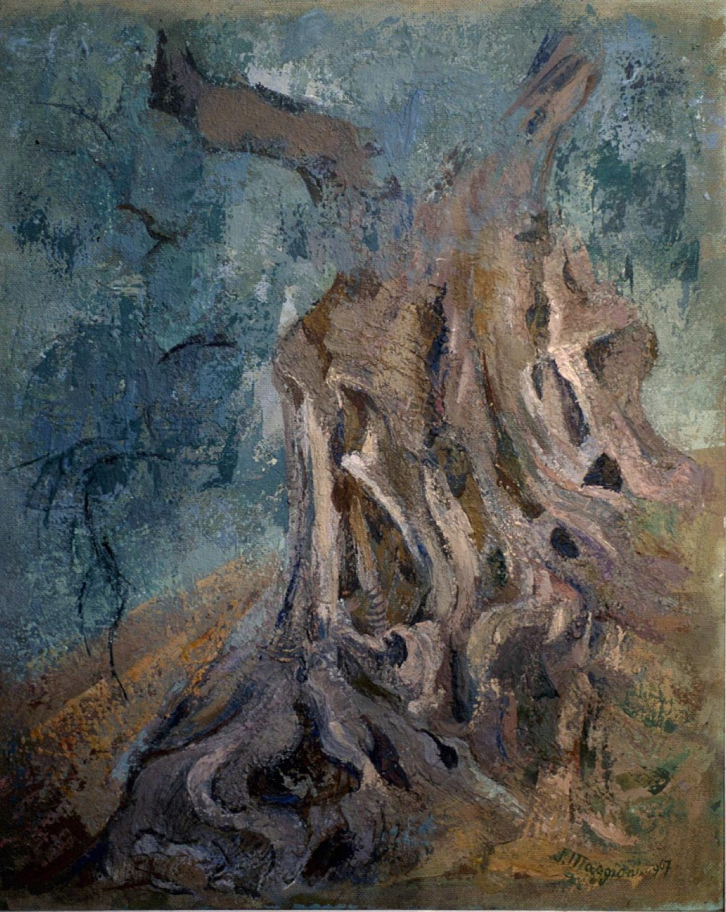

Ulivo millenario di Grecia, 1967 — olio su masonite, 73 × 60 cm
Silvia Zucchinetti Maggioni
Milano, Accademia di Brera — Diano Marina, Liguria
Una vita dedicata alla pittura: dai ritratti milanesi degli anni Venti alla lunga stagione ligure, tra ulivi secolari, paesaggi norvegesi e la luce della Riviera che ha attraversato più di sessant'anni di lavoro.

Dalla Milano di Brera alla Liguria degli ulivi
Nata a Milano nel 1898, Silvia Zucchinetti si forma all'Accademia di Belle Arti di Brera, allieva di Aldo Carpi. Sposa l'architetto e designer Gino Maggioni, con cui condivide gli anni milanesi tra arti decorative e design del mobile. Nel 1941 la coppia si trasferisce a Diano Marina, in Liguria, dove Silvia ritrova e approfondisce la pittura fino agli ultimi anni della sua vita, esponendo in numerose personali in Italia e all'estero.